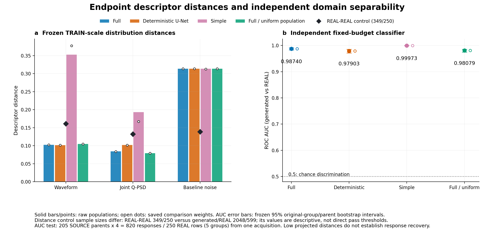
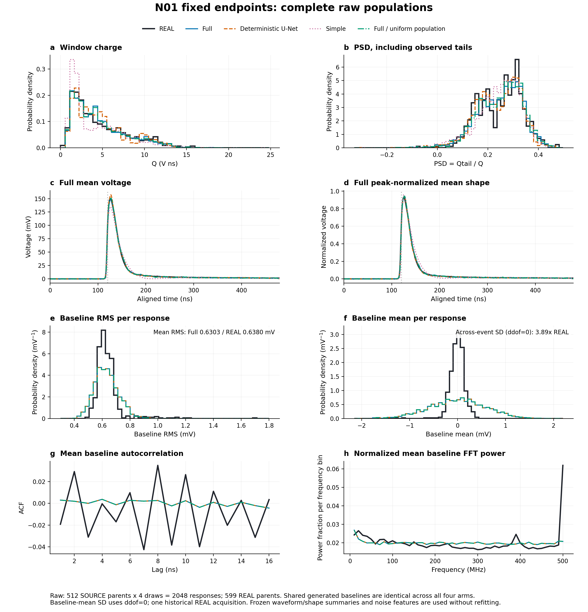
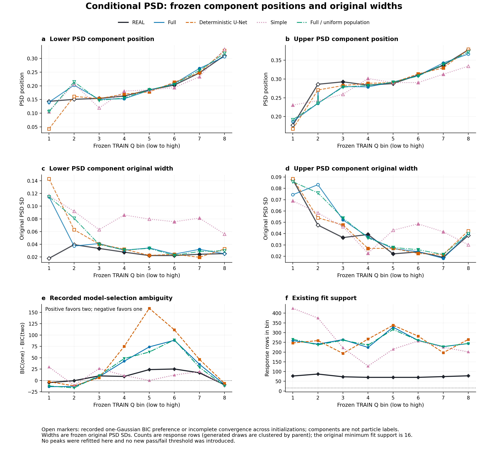
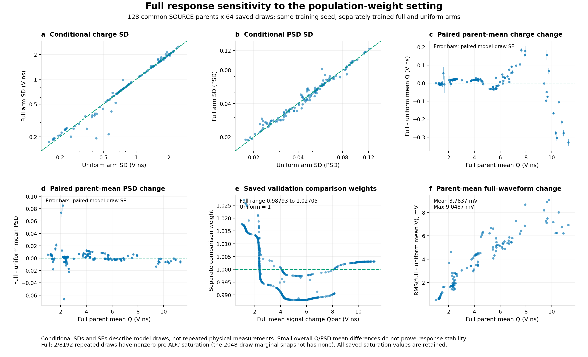

完整模型训练完成；完整响应匹配仍有明确残差
四组模型在同一固定计划下完成训练和自动终点评估。完整随机 U-Net 改善了部分 Q–PSD 统计，但波形可区分性、电子学噪声联合结构和部分条件峰宽仍不匹配。
训练从 2026-10-12 00:51:53 至 07:00:28（Asia/Singapore），约 6 小时 9 分钟，监督进程退出码 0。所有臂达到名义 20,000 步；每臂均覆盖全部 6,593 个 SOURCE 和 21,047 个 REAL TRAIN 记录。本次按固定末点复核，未重新训练或挑选检查点。
四组对照：随机分支有局部收益，尚无整体优势
wave 包含完整电压、归一化波形及一、二阶差分的固定投影分布距离；QPSD 包含联合 Q–PSD 与按输出电荷分箱的 PSD 距离。三种距离均使用冻结的 TRAIN 尺度，数值越小表示该指标更接近。AUC 越接近 0.5 越难区分两域；这里没有追加历史通过线。
原始计数总体
| 固定终点 | wave 距离 | QPSD 距离 | noise 距离 | 域分类器 AUC［95% 区间］ |
|---|---|---|---|---|
| full 完整随机 U-Net | 0.102580 | 0.084326 | 0.313555 | 0.987395 [0.982761, 0.991082] |
| deterministic 确定性 U-Net＋相同电子学噪声 | 0.101556 | 0.101716 | 0.313555 | 0.979029 [0.971633, 0.985703] |
| simple 简单随机响应 | 0.352711 | 0.193116 | 0.313555 | 0.999732 [0.999282, 1.000000] |
| full_uniform 完整随机 U-Net，固定均匀比较权重 | 0.104809 | 0.079330 | 0.313555 | 0.980785 [0.974585, 0.985853] |
单独的比较权重
| 固定终点 | wave 距离 | QPSD 距离 | noise 距离 | 域分类器 AUC［95% 区间］ |
|---|---|---|---|---|
| full 完整随机 U-Net | 0.102493 | 0.083584 | 0.313619 | 0.987310 [0.982633, 0.991024] |
| deterministic 确定性 U-Net＋相同电子学噪声 | 0.101399 | 0.101280 | 0.313622 | 0.978944 [0.971536, 0.985643] |
| simple 简单随机响应 | 0.377277 | 0.167057 | 0.312800 | 0.999757 [0.999339, 1.000000] |
| full_uniform 完整随机 U-Net，固定均匀比较权重 | 0.104809 | 0.079330 | 0.313555 | 0.980785 [0.974585, 0.985853] |
full 相对 deterministic 的原始 QPSD 距离减少 17.1%，wave 距离略大，AUC 也更高。full_uniform 的 QPSD 距离更小。该比较不支持“增加随机分支后各项均改善”；simple 在本次结构、预算和初始化下整体较差，也不能外推为所有简单模型无效。
全 1 权重代表 SOURCE 记录的均匀计数参考，真实物理事件权重仍未知。学习到的比较权重只用于条件总体比较，不能当作绝对源谱校准。

全波形和电子学噪声：RMS 接近掩盖了联合结构缺口
full 的平均 Q 为 4.6308 V·ns，REAL 为 4.6480 V·ns；平均 PSD 为 0.24833 与 0.25008。峰时间均值偏移约 +1.19 ns，半高上升时间均值偏移约 +0.17 ns。总体均值接近仍不足以证明完整波形分布一致。

只读诊断给出了具体解释：前 100 点在全窗时间坐标中的平均位置为 −0.7933。REAL 短窗线性拟合的截距与斜率相关系数约 0.950，其协方差会显著抵消基线均值的方差。当前电子学分支独立抽取截距和斜率，所学边际标准差约 0.381 / 0.581 mV；仅这一独立漂移项就预测约 0.598 mV 的基线均值 SD，与观测生成结果接近。
短窗 OLS 系数的离散度还包含估计噪声；直接用这些边际离散度初始化潜在漂移，再叠加随机噪声，会有重复计入的风险。该结论指向噪声分解及联合分布建模不足。data.py 与 model.py 的时间坐标一致，未发现此处的坐标倍率错误。电子学分支在共享阶段后冻结，因此四臂共同继承该残差；它可能为域分类提供信息，尚未证明是高 AUC 的唯一原因。
条件 PSD：部分峰宽残差与分量歧义必须保留
8 个电荷箱均满足本次最小样本支持。分箱使用生成输出 Q 与 REAL Q；箱号从 0 开始。full 在箱 0、1、7 的最佳双 Gaussian EM 未收敛，且双方 BIC 均不支持两组件优于单组件，不能把强制双峰拟合的参数当作已恢复的真实双峰宽度。
| 箱 | 生成 / REAL 响应数 | 低 PSD 组件 SD full / REAL | 高 PSD 组件 SD full / REAL | 解释范围 |
|---|---|---|---|---|
| 0 | 259 / 77 | 0.11482 / 0.01784 | 0.07438 / 0.08768 | 双组件证据不足；full EM 未收敛 |
| 1 | 241 / 87 | 0.03718 / 0.03940 | 0.08326 / 0.04754 | 双组件证据不足；full EM 未收敛 |
| 2 | 264 / 73 | 0.04116 / 0.03344 | 0.05216 / 0.03646 | 双组件拟合可描述；无真实粒子标签 |
| 3 | 224 / 70 | 0.03064 / 0.02760 | 0.03697 / 0.03920 | 双组件拟合可描述；无真实粒子标签 |
| 4 | 328 / 70 | 0.03417 / 0.02227 | 0.02670 / 0.02208 | 双组件拟合可描述；无真实粒子标签 |
| 5 | 260 / 70 | 0.02447 / 0.02229 | 0.02402 / 0.02382 | 双组件拟合可描述；无真实粒子标签 |
| 6 | 228 / 74 | 0.03201 / 0.02428 | 0.01810 / 0.01903 | 双组件拟合可描述；无真实粒子标签 |
| 7 | 244 / 78 | 0.02510 / 0.02530 | 0.04004 / 0.03837 | 双组件证据不足；full EM 未收敛 |
例如箱 4 低 PSD 组件宽度为 0.03417 / 0.02227，约 1.53 倍；箱 2 高 PSD 组件约 1.43 倍。两组件没有真实 neutron / gamma 标签，重复响应不增加独立父事件数，当前峰位/峰宽没有按原始父组给出置信区间。

重复响应、输入依赖与总体权重敏感性
每臂对固定 128 个 SOURCE 父事件各生成 64 次。下表为每父样本方差/协方差的平均值（方差分母 63）；这些是模型内部随机性，尚无同一真实输入的重复 REAL 真值证明其物理大小正确。
| 模型 | 平均 Var(Q|x)，(V·ns)² | 平均 Var(PSD|x) | 平均 Cov(Q,PSD|x)，V·ns |
|---|---|---|---|
| full | 1.542357 | 0.003057 | 0.012943 |
| deterministic | 0.022124 | 0.002300 | 0.005701 |
| simple | 1.939331 | 0.004283 | 0.022350 |
| full_uniform | 1.523302 | 0.003028 | 0.010683 |
同随机变量的输入干预显示输出确实响应形状和幅度变化。不过，0.8 倍幅度测试有 3 / 8 个 SOURCE Q 低于冻结 TRAIN 下界，1.2 倍有 1 / 8 高于上界，属于外推。在一个低端外推父事件的 32 次响应中出现 1 次观测 Q=−0.0039065 V·ns，对应 PSD 离群值；该值保留在记录中，不能解释为合理物理依赖，也不应误报为 TRAIN 范围内的失败。
full 的比较权重范围为 0.98793–1.02705，属于很弱的总体扰动。与相同种子、固定均匀比较权重重训的 full_uniform 相比，128 个共同父事件的 Qbar 平均差为 0.000908 V·ns，但逐父差异会相互抵消。每父平均波形差的 RMS 平均为 3.784 mV，最大 9.049 mV；平均 Q–PSD 条件协方差变化为 0.002260，bootstrap 区间约 [0.00120, 0.00336]。
该实验检验的是改变比较总体假设后重新训练的敏感性。它没有完成原方案所述“冻结同一响应，再改变 SOURCE 能谱 / 组成”的独立迁移验证。当前一个训练种子、一份真实采集及窄幅权重变化，均不足以证明响应核与事件总体可分别识别。

数值有效性与证据边界
- 正式边际评估使用 512 个 SOURCE 父事件×4 响应及 599 个 REAL 原始事件。完整模型这 2048 条响应均有限、Q 为正，无近零分母保护行，未发生 ADC 饱和。pre-ADC 电荷恒等式最大残差 5.07e-15 V·ns。
- 更大的 128×64 重复集合中 full 有 2 / 8192 个事件出现 pre-ADC 越界，45 / 8192 个 PSD 小于 0；这些没有静默删去。不能由边际样本零饱和推断所有生成响应均不饱和。
- 独立域分类器未复用训练判别器；SOURCE 父 ID 与 REAL 原始分组在 classifier fit/test 之间交叠为 0。测试仅含 205 个 SOURCE 父事件、250 个 REAL 记录 / 5 个原始块。AUC 区间反映当前冻结分类器下的抽样不确定性，没有包含重训种子或跨采集误差。
- TRUE 粒子标签、绝对校准、实测物理事件权重均未知。原始记录组不等于独立采集。未追加 R79、旧 v5 或旧 A–F 硬阈值；低投影距离、近似均值和存在随机方差均不单独构成科学通过。
- 原始 endpoint_report 中 full 的 counterpart 状态是其生成时点的 pending；四臂完成后的总体比较以 ARM_COMPARISON.json 为准。旧报告原样保留，未改写历史回执。
可复核交付
回收包包含 68 个训练/终点评估文件，逐文件 SHA256 已重新核对；六个远端科学源文件与启动时 SHA 一致。四个末点的 stage、update、有限性和全部 77,000 行更新记录已重新打开检查。源文件、原始数据、启动回执和旧研究结果保持可追溯。
| stage_20000.pt | SHA256 |
|---|---|
| full | 374e33bc4784259cd9315623ba107d81f71f26eeee509a3d517bb2fca7c0c959 |
| deterministic | 5d632013f106ca7362695d0f083ba302d1232cef35798da1df07f6ff12e518f7 |
| simple | c1fe21ab9a0cb0095af1123b58a6544a45364192d131bae4c4b1e9268c88f9dc |
| full_uniform | f3de1da8d6d915154480d6a8db99be6706e7d653f5faa7a62f0f26b38fdd5043 |
回收核验 · 末点与划分审计 · 电子学与外推诊断 · 独立科学审核 · 机器可读总结
复现图表：analysis/build_figures.py。复现本报告：scripts/build_completed_review.py --review-root <本目录>。全部分析使用已保存固定终点数组，无新生成响应、无模型参数更新。